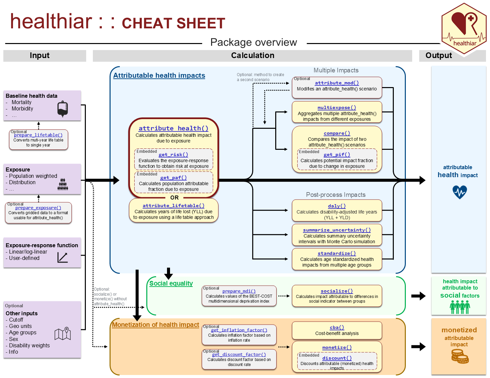

Want to know as soon as a new healthiar version is released? See Stay updated below.
Introduction
healthiar (health impact assessment in R) is an R package to quantify and monetize the health impacts attributable to exposures, such as air pollution or noise, in a study area. Using healthiar, you can:
-
Quantify health impacts choosing among multiple input data formats and calculation pathways:
Exposure data as single value or as distribution
Relative risk or absolute risk
Fixed-shape or user-defined exposure-response functions
Single or age-specific baseline health data (life table approach)
Iterate across geographical units
Compare scenarios
Include and summarize uncertainties
Monetize health impacts or perform cost-benefit analyses adjusting for inflation and discounting
Consider social inequalities in the assessment and stratify the results
Installation
We recommend frequently installing the newest healthiar version. healthiar requires R version 4.2.0 or higher. There are two options to install healthiar:
- From CRAN: Run the following command in R:
install.packages("healthiar")- From GitHub (most recent version): Run the following commands in R:
install.packages("remotes") # Only if not already installed
remotes::install_github(repo = "SwissTPH/healthiar", build_vignettes = TRUE, dependencies = TRUE)You may be prompted to install or update additional package dependencies required by healthiar.
After installation, load the package:
Example
Attribute disease cases to PM2.5 exposure in four Swiss cantons and aggregate the results by language region:
library(healthiar)
results <- attribute_health(
geo_id_micro = c("Zurich", "Basel", "Geneva", "Ticino"), # Cantons
geo_id_macro = c("Ger", "Ger", "Fra", "Ita"), # Language regions
rr_central = 1.369, # Relative risk
rr_increment = 10, # per 10 µg/m³ increase in PM2.5 exposure
cutoff_central = 5, # Cutoff in µg/m³
erf_shape = "log_linear", # Shape of the exposure-response function
exp_central = c(11, 11, 10, 8), # Exposure in µg/m³ per canton
bhd_central = c(4000, 2500, 3000, 1500) # Baseline health data per canton
)
# Attributable cases by language region (larger geo unit)
results$health_main
# Attributable cases by canton (smaller geo unit)
results$health_detailed$results_raw Getting started
You have different materials to learn about the R package healthiar.
Cheat sheet
Have a quick and visual look at the cheat sheet: 
Vignette
Read the vignette (~ package manual) intro_to_healthiar, which you can access:
on the package website (recommended)
in the R console: Run
vignette("intro_to_healthiar")in the web browser: Run
browseVignettes("healthiar")in the R console and the page will open up in your browser
Function documentation
See the function help pages for information about specific functions. You can access the function documentation of e.g. the function attribute_health by
going to the reference page of the package website
running
?attribute_healthin the R console (with healthiar loaded)
Video
Watch the 45-minute video from an online international workshop (30 September 2025) and see the workshop slides.
Stay updated
We regularly improve healthiar and publish a new GitHub release every time a new version reaches CRAN. To make sure you don’t miss one:
Watch releases: on the GitHub repo, click Watch > Custom > tick Releases only, so you get notified without being flooded by every issue or discussion.
Star the repo: click Star on the GitHub repo to bookmark it and help others discover healthiar.
Subscribe via RSS/Atom: if you prefer a feed reader, subscribe to https://github.com/SwissTPH/healthiar/releases.atom.
Check the changelog: see what changed in each version on the changelog.
Citation
If you use healthiar in your work, please cite our paper in the Journal of Open Source Software (JOSS): healthiar: An R package to quantify and monetize health impacts attributable to (environmental) exposure.
To get the full reference and the BibTeX entry, run citation("healthiar") in R.
healthiar can alternatively be cited through its GitHub repository or its Zenodo archive, but we encourage you to cite the above-mentioned JOSS paper.
Disclaimer and license
By using healthiar, you confirm that you agree with the following disclaimer and terms of the license:
Disclaimer: The R package healthiar is provided “as is”, without warranty of any kind. The developers are not liable for the results obtained with it. Functions, arguments and results may change between versions; see the changelog.
License: healthiar is released under the GPL license (version 3 or later).
Contributions
We welcome your contributions! Do you want to report a bug, provide code or just ask a question or leave a comment? Please read and follow the guidelines of our guide for contributions. By contributing to healthiar, you agree to abide by our code of conduct.
Presenting healthiar
If you would like us to present healthiar at a conference, lecture or training, please contact us: alberto.castrofernandez@swisstph.ch.
Use of AI
Parts of the development of healthiar were assisted by the artificial intelligence (AI) tool Claude (Anthropic). For this reason, Claude appears in the list of GitHub contributors. All AI-assisted changes were reviewed and approved by the healthiar developers.
Acknowledgements
healthiar was developed under the framework of the EU project BEST-COST. BEST-COST was funded by the European Union’s Horizon Europe programme under Grant Agreement No. 101095408.
Special thanks to our community members who submitted bug reports, suggested improvements, and provided valuable feedback to refine this package. Here are some of them in alphabetical order: Adrian Aebi, Gaia Corbetta, Federico Cussotto, Brecht Devleesschauwer, Georgia Dyer, Nicole Engelmann, Aletta Karsies, Sasha Kohmenkho, Heli Lehtomäki, Matthias Lochman, Enrico Pisoni, David Rojas Rueda, Jörg Sintermann and Maciek Strak.